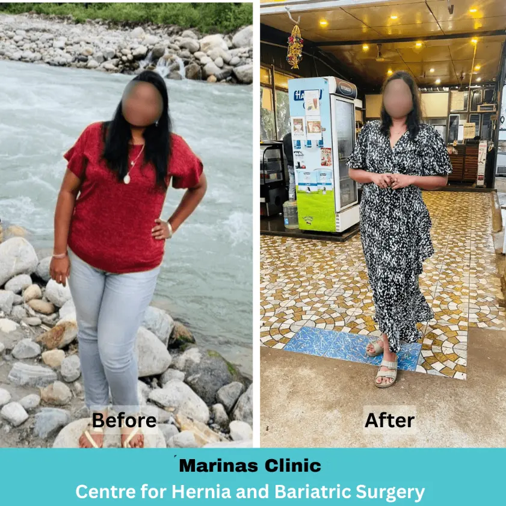
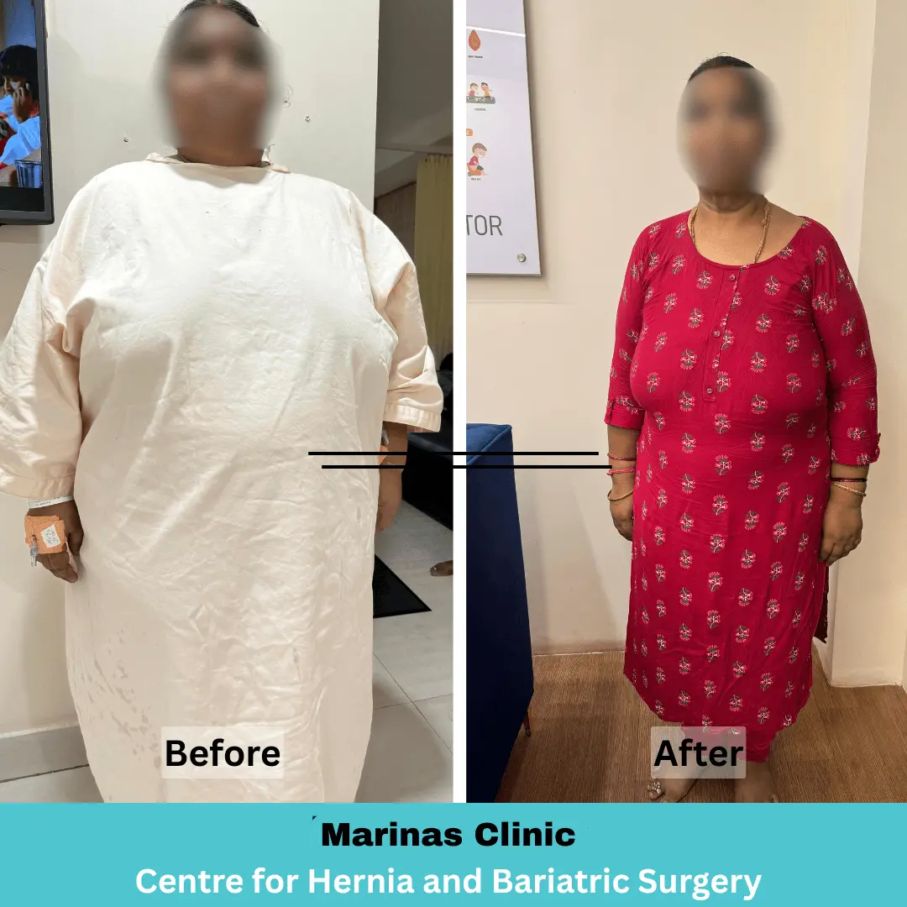
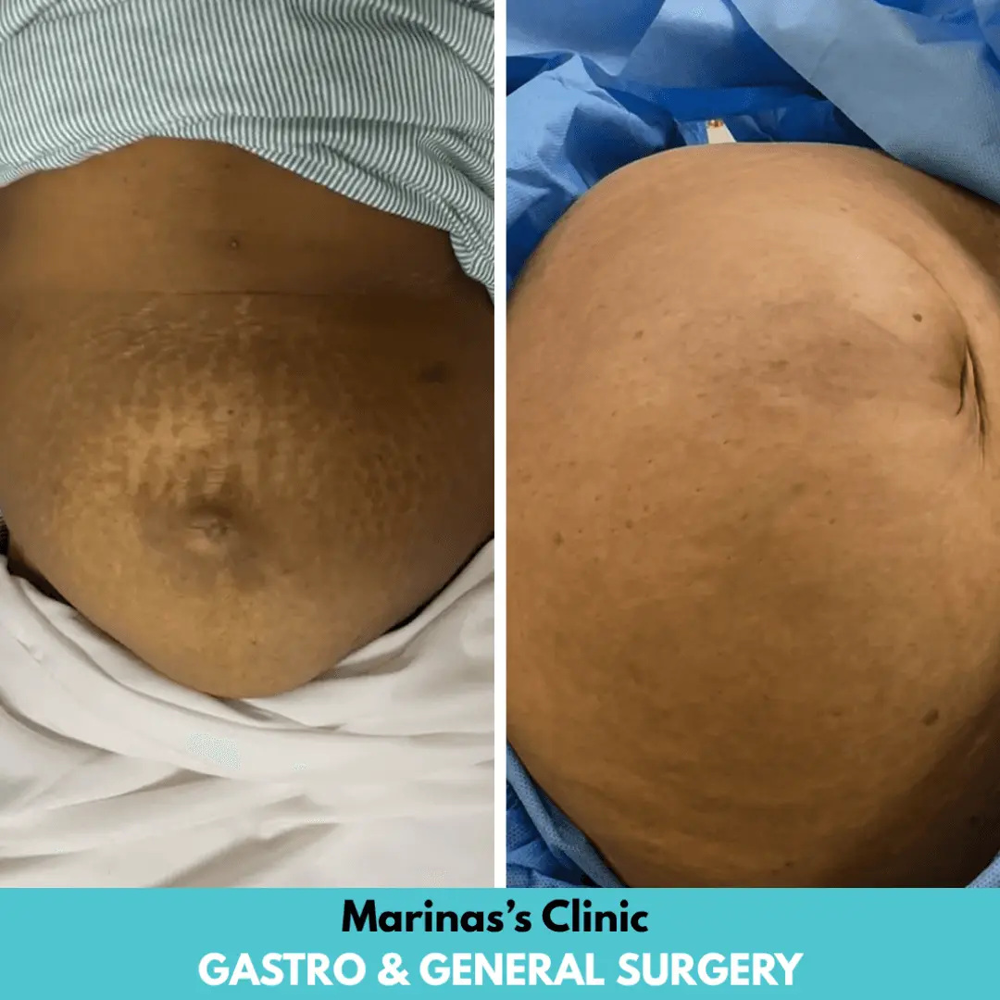
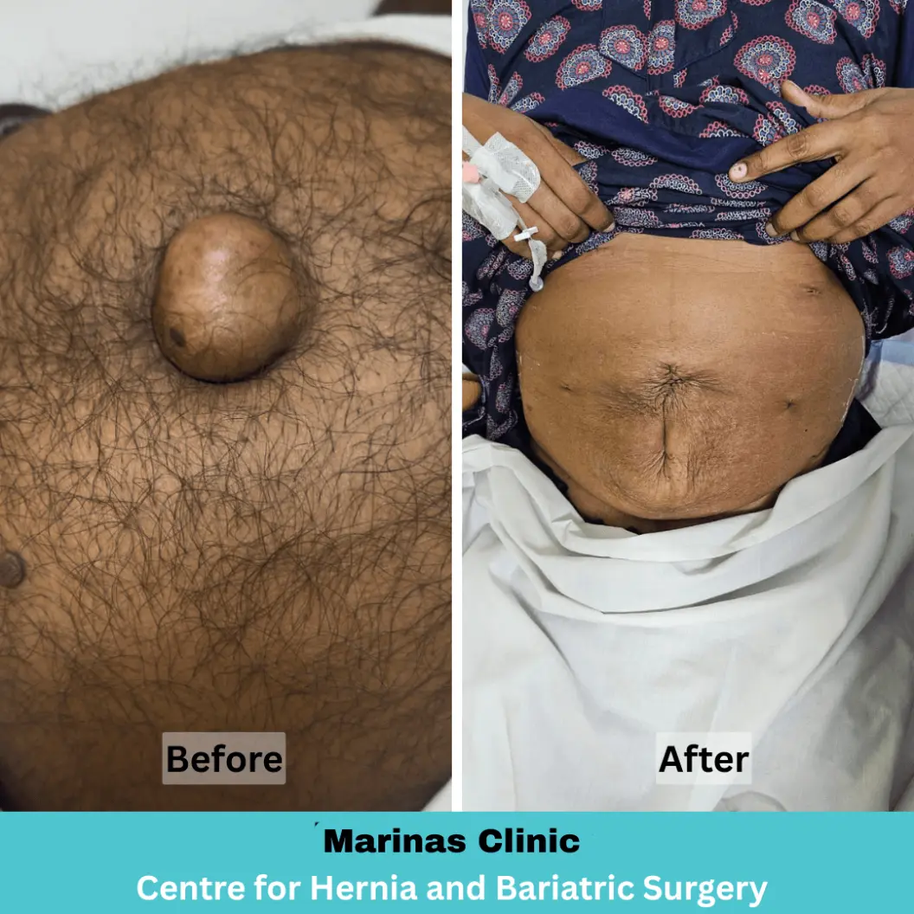
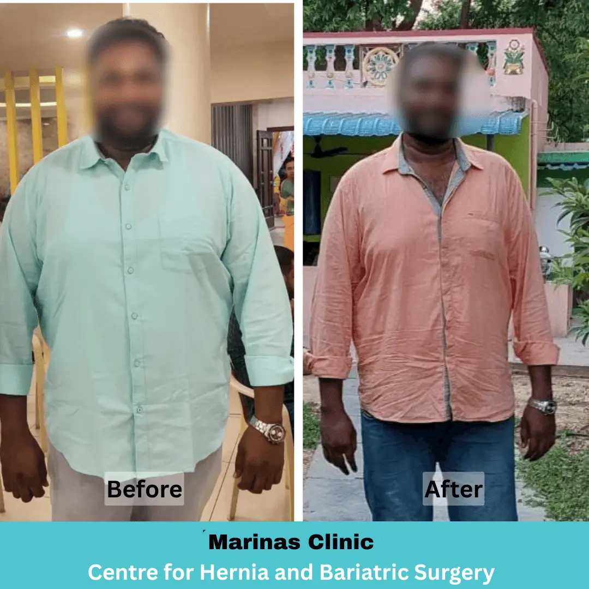
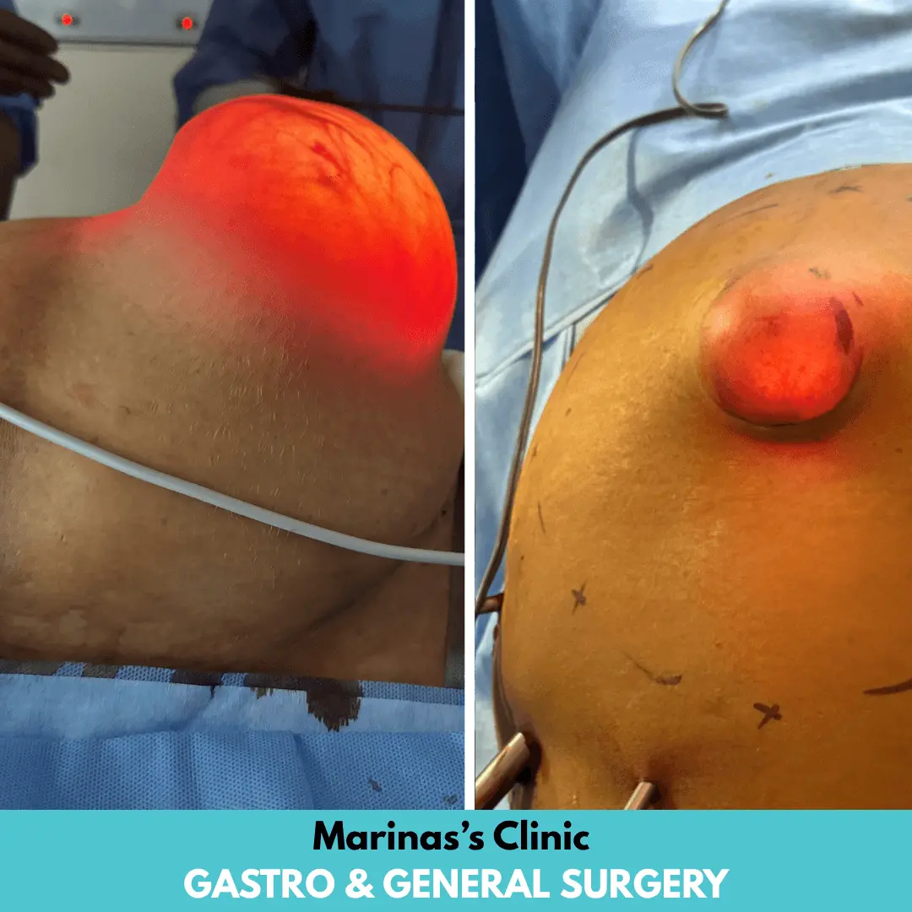

Hernia / Diastasis Recti
A bulge, dragging pain or post-pregnancy abdominal gap that does not go away on its own.
Book for this →Hernia, gallstones, acid reflux, piles, obesity and more. Book a focused consultation with Dr. Preethi Mrinalini, advanced laparoscopic and bariatric surgeon.
Tap a condition to open a fresh consultation form and get to the right conversation faster.
A bulge, dragging pain or post-pregnancy abdominal gap that does not go away on its own.
Book for this →When weight loss resists diet and exercise, and diabetes, BP or joint pain keep rising.
Book for this →Repeated upper abdominal pain, especially after fatty meals, nausea or bloating.
Book for this →Burning, regurgitation or long-term medicine dependence that keeps coming back.
Book for this →Lower-right abdominal pain, fever or emergency abdominal symptoms needing evaluation.
Book for this →Bleeding, pain, swelling or discharge that keeps coming back despite creams and diets.
Book for this →Modern laser-based care for suitable conditions, designed for less discomfort and a smoother recovery.
Book for this →This is not a diagnosis. It simply helps you decide whether a focused assessment is worth booking.
But what applies above is one whether an assessment is worth your time.
Book my consultationSee actual treatment outcomes from our patients.






Small symptoms can quietly become daily stress when they are left unexplained.
A proper review turns vague worry into a precise next step you can act on.
Dr. Preethi brings specialist surgical training with a practical, patient-first consultation style.
The goal is clarity: what is happening, what can wait, what cannot, and what the right next step looks like.
"Patients deserve an honest explanation before they are asked to make a surgical decision."
Every part of the consultation is built to reduce confusion and help you understand your options.
Keyhole surgeries with smaller incisions, less scarring and fewer or less discomfort.
Many patients are back to a normal routine within a couple of weeks, not months.
Your scans and blood work get a proper personal opinion. They are looked at properly by the surgeon.
A fresh, specialist perspective on advice you have already been given, with no pressure.
Many laparoscopic procedures need just a single night, some as day-care.
A dedicated team helps you through cashless and reimbursement paperwork.
From first contact to your consultation, the process stays simple, focused and clear.
Submit the form or message us on WhatsApp with your symptoms and concern.
Scans, prescriptions or previous consultation notes all reviewed together.
You understand the issue, urgency and options before any decision is made.
Explore treatment results to understand the care approach and what patients can expect.
See more patient education and treatment updates from Dr. Preethi Mrinalini on Instagram.
Visit Instagram"She explained why my symptoms kept coming back and gave a clear plan. No pressure at all just honest guidance on what to do next."
"Respectful conversation from start to finish. My reports were reviewed properly and every option was explained before anything was decided."
Support services are available around the visit: assessment, tests and next steps that easier.
Focused, unhurried assessment with the surgeon.
On-campus lab collection plus ahead of protocols.
Comprehensive packages to stay ahead of problems.
An advanced minor OT and in-house pharmacy.
Share a few details and the team will call you to confirm the right slot and location.
Get clear answers about consultation, reports, surgery decisions and what to expect next.
Not always. Many conditions are first managed without surgery. The consultation tells you honestly whether surgery is needed, can wait, or can be avoided.
No. The consultation is about clarity, not persuasion. You'll hear the non-surgical options first, and surgery is discussed only when it is genuinely the right treatment.
A modern technique using small incisions and a camera, which usually means less pain, minimal scarring and a faster recovery than open surgery.
Absolutely. Bring your reports and previous advice you'll get an honest, independent assessment with no obligation.
Most medically indicated procedures are covered. A dedicated team helps you with cashless approvals and reimbursement paperwork.
Many laparoscopic procedures need only a day-care or single-night stay, with most people back to routine within one to two weeks.
Any scans, blood reports, prescriptions or discharge summaries you have. If you have nothing, that's fine the assessment starts from your symptoms.
The team will confirm the current consultation fee when they call to arrange your slot.
Reserve your consultation with Dr. Preethi Mrinalini and finally understand your condition and enjoy a life quality of life.
Book my consultation